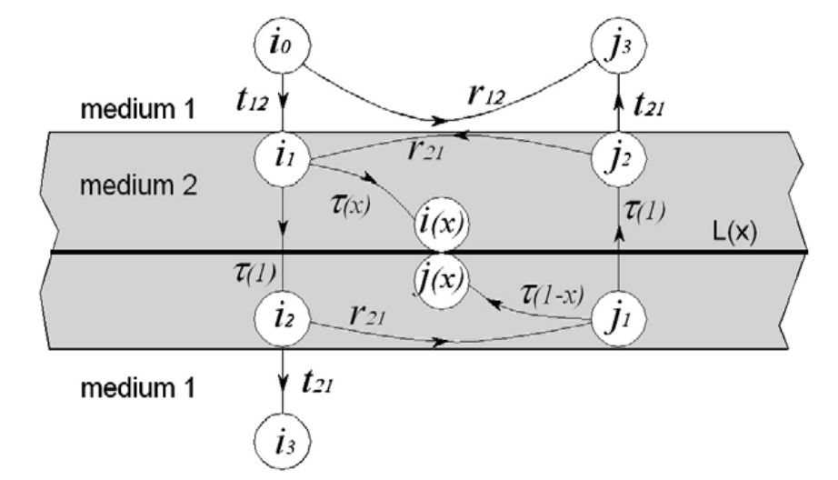
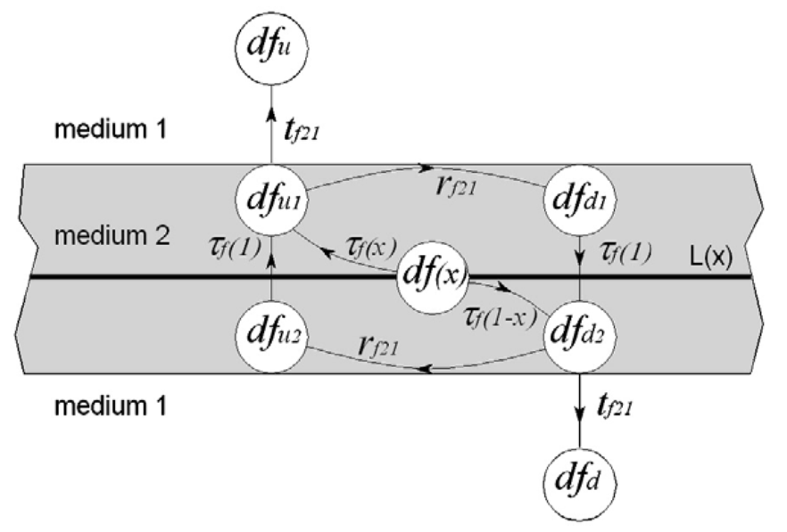
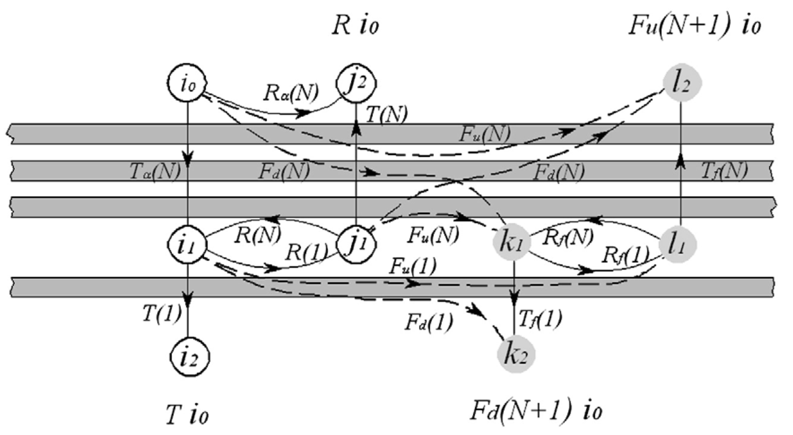
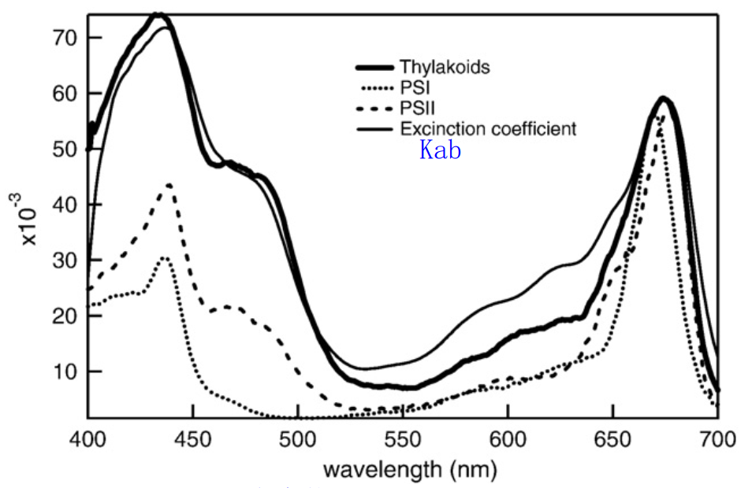
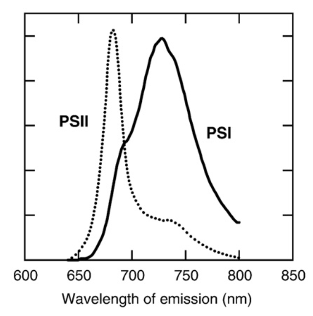

本文主要参考文献为：
- Pedros R,Goulas Y,Jacquemoud S,Louis J, Moya I (2010) FluorMODleaf:A new leaf fluorescence emission model based on the PROSPECT model.Remote Sens.Environ.114:155-167. doi:10.1016/j.rse.2009.08.019.
- Pedros R,Moya I,Goulas Y,Jacquemoud S (2008) Chlorophyll fluorescence emission spectrum inside a leaf.Photochemical& Photobiological Sciences 7:498-502. doi: 10.1039/b719506k.
FluorMODleaf是一个常用的基于PROSPECT模型的叶片尺度叶绿素荧光模拟模型。FluorMODleaf主要用于模拟植物叶片反射率、透射率以及上行和下行叶绿素荧光。模型考虑了叶片内部多个吸收和散射的基本层，通过积分无限薄层的荧光发射来计算整体荧光。输入变量包括PROSPECT-5的参数（如叶结构参数N、总叶绿素含量Cab、总类胡萝卜素含量Ccx、等效水厚度Cw和干物质含量Cm（或单位面积的叶质量LMA）等），以及新增的参数（如PSI和PSII的相对吸收截面比$\sigma_{II}/\sigma_{I}$、PSI和PSII的荧光量子效率$\tau_{I}$和$\tau_{II}$等）。
表1 FluorMODleaf模型的输入参数
| 变量名 | 符号 | 取值范围 | 标准值 | 单位 |
|---|---|---|---|---|
| 叶结构参数 | N | 1-2.5 | 1.5 | - |
| 叶绿素含量 | $C_{ab}$ | 0.4–76.8 | 33.0 | $\mu g\space cm^{-2}$ |
| 总类胡萝卜素含量 | $C_{cx}$ | 0–25.3 | 8.0 | $\mu g\space cm^{-2}$ |
| 水分含量 | $C_{w}$ | 0.0044–0.0340 | 0.01 | cm |
| 干物质含量 | $C_{m}$ | 0.0017–0.0331 | 0.005 | $g\space cm^{-2}$ |
| 相对吸收截面比 | $\sigma_{II}/\sigma_{I}$ | 1.0–2.4 | 1.0 | - |
| PSI荧光寿命 | $\tau_{I}$ | 0.034–0.1 | 0.035 | ns |
| PSII荧光寿命 | $\tau_{II}$ | 0.3–2.0 | 0.5 | ns |
模型假设一个叶片由N个水平的具有粗糙表面的均匀吸收单元（plate）组成，入射光在每个吸收单元表面产生各向同性的扩散。每个吸收单元内部是可产生荧光的具有X层的介质。
假设有一个吸收单元被入射光$i_{0}$ （可以是直射、散射或者混合光）照射，由于吸收单元表面粗糙，在介质界面反射或透射的所有通量都是各向同性的。在图1中，这些通量被指定为$i_{1}$、$j_{1}$、$i_{3}$、和$j_{3}$。

图1
$\tau(x)$是穿过厚度为x的截面的各向同性光的内部介质的透射率。
在吸收单元内定义了一个无穷小的水平层$L_{x}$，位于深度x处，其中x是指距吸收单元顶部的距离。层$L_{x}$接收从板的顶部$(x=0)$向下行进的通量$i(x)$和从底部$(x=1)$向上行进的通量$j(x)$。深度$x$处的荧光发射$df(\lambda _{ex}, \lambda {em}, x)$与无穷小层$L{x}$吸收的光子量成正比，可以写为:
$$
df(\lambda _{ex}, \lambda _{em}, x) = \Phi (\lambda _{ex}, \lambda _{em})da(\lambda _{ex}, x) \tag{1}
$$
其中，$\lambda _{ex}$和$\lambda _{em}$分别是荧光激发（excitation）和释放（emission）波长，$\Phi (\lambda _{ex}, \lambda _{em})$是荧光量子效率函数，$da(\lambda _{ex}, x)$是吸收的辐射通量。$\Phi (\lambda _{ex}, \lambda _{em})$可以定义为介质在$\lambda _{ex}$处吸收的一个光子在$\lambda _{em}$处发射的概率。吸收通量$da(\lambda {ex}, x)$与穿过层$L{x}$的通量变化有关，因此可以通过推导相对于x的传播通量$i(x)$和$j(x)$来计算：
$$
da(\lambda _{ex}) = (i(x)-i(x+dx))+(j(x+dx)-j(x)) = (-\frac{di}{dx}(x)+\frac{dj}{dx}(x))dx \tag{2}
$$
根据图1，辐射通量在单元内的传输可以表达为以下线性方程：
$$
\begin{equation}
\left{
\begin{aligned}
i_{1} &= t_{12}i_{0} + r_{21}i_{2}
\
i_{2} &= \tau(1)i_{1}
\
i_{3} &= t_{21}i_{2}
\
i(x) &= \tau(x)i_{1}
\end{aligned}
\right.
\tag{3}
\end{equation}
$$
$$
\begin{equation}
\left{
\begin{aligned}
j_{1} &= r_{21}i_{2}
\
j_{2} &= \tau(1)j_{1}
\
j_{3} &= t_{21}j_{2} + r_{12}i_{0}
\
j(x) &= \tau(1-x)j_{1}
\end{aligned}
\right.
\tag{4}
\end{equation}
$$
其中，$r_{12}$和$t_{12}$分别为从空气层（medium 1）到介质层（medium 2）的反射率和透射率。相似地，$r_{21}$和$t_{21}$分别为从介质层（medium 2）到空气层（medium 1）的反射率和透射率。
反射率$r_{12}$可以通过PROSPECT模型给出，因此，在不考虑叶片表层吸收的情况下，$t_{12}=1−r_{12}$，而$t_{21} = t_{12}/n^2$。
$\tau(x)$根据比尔定律，对单位角度内的透过率进行半球积分得到：
$$
\tau(x) = \frac{\int_0^{2\pi}d\psi\int_0^{\pi/2}\tau(\theta,x)cos\theta sin\theta d\theta}{\int_0^{2\pi}d\psi\int_0^{\pi/2}cos\theta sin\theta d\theta} = (1-kx)exp(-kx) + k^2x^2\Tau(0, kx)
\tag{5}
$$
其中，$\theta$和$\psi$是入射辐射通量的天顶角和方位角。$k$是叶片内部介质的吸收系数。$\Tau(0, kx)$是“上”不完全伽马函数。解方程(3)和(4)可以得到$i(x)$和$j(x)$如下：
$$
i(x) = \frac{i_0t_{12}\tau(x)}{1-r^2_{21}\tau(1)^2}
\tag{6}
$$
$$
j(x) = \frac{i_0t_{12}r_{21}\tau(1)\tau(1-x)}{1-r^2_{21}\tau(1)^2}
\tag{7}
$$
因此，方程(6)和(7)对$x$求导即可得到方程(2)所需的$\frac{di}{dx}(x)和\frac{dj}{dx}(x)$。同时$\tau(x)$的一阶导数为：
$$
\frac{d\tau}{dx}(x) = 2k^2x\Tau(0, kx) - 2kexp(-kx)
\tag{8}
$$
结合方程(1),(2),(5)-(7)可以得到单层$L(x)$释放的叶绿素荧光为：
$$
df(x) = \Phi (\lambda {em}, \lambda {ex})\frac{i_0t{12}(r{21}\tau(1)\frac{d\tau}{dx}(1-x)-\frac{d\tau}{dx}(x)}{1-r^2_{21}\tau(1)^2}
\tag{9}
$$
为了计算整个单元的荧光发射，我们首先必须考虑界面的内部反射，并评估内部介质对发射通量的重吸收，然后对整个单元上$x$在0和1之间变化的结果进行积分。同样，可以使用发射通量网络来建立描述荧光再吸收的联立方程来解决这个问题(图2):

图2
$$
\begin{equation}
\left{
\begin{aligned}
df_u &= t_{f21}df_{u1}, \
df_{u1} &= \frac{1}{2}\tau_f(x)df(x) + \tau_f(1)df_{u2}, \
df_{u2} &= r_{f21}df_{d2}, \
df_{d1} &= r_{f21}df_{u1}, \
df_{d2} &= \frac{1}{2}\tau_f(1-x)df(x) + \tau_f(1)df_{d1}, \
df_d &= t_{f21}df_{d2}.
\end{aligned}
\right.
\tag{10}
\end{equation}
$$
其中，下标$f$表示涉及荧光发射波长$\lambda_{em}$。
由于荧光是一种各向同性光源，发射的光子在向上和向下方向均匀分布，并且透射率函数$\tau_f(x)$通过简单地在$\tau(x)$中（方程(5)）将$k$替换为$k_f$得到。由此，解方程(10)可得无限小的层$L(x)$的上行和下行荧光通量$df_{u}$和$df_{d}$分别为：
$$
\begin{equation}
\left{
\begin{aligned}
df_u &= \frac{t_{f21}df(x)(r_{f21}\tau_f(1)\tau_f(1-x) + \tau_f(x))}{2(1-r^2_{f21}\tau_f(1)^2)} \
df_d &= \frac{t_{f21}df(x)(\tau_f(1-x) + r_{f21}\tau_f(1)\tau_f(x))}{2(1-r^2_{f21}\tau_f(1)^2)}
\end{aligned}
\right.
\tag{11}
\end{equation}
$$
对$df_{u}$和$df_{d}$从$x=0$到$x=1$进行积分，可得到整个单元的上行和下行荧光信号$F_u(1)$和$F_d(1)$为：
$$
\begin{equation}
\left{
\begin{aligned}
F_u(1) &= \int_0^1df_u \
F_d(1) &= \int_0^1df_d
\end{aligned}
\right.
\tag{12}
\end{equation}
$$
这些表达式无法通过解析方式进行积分，因此本文对一系列k和kf值进行了数值积分，以构建查找表并加快计算速度。
现在假设有一堆N个均匀的荧光单元，由强度为$i_0$的各向异性入射光束照射，该光束内接在由其半角$\alpha$定义的锥体中。输出变量$R_\alpha(N)$和$T_\alpha(N)$为整个叶片的在激发波长为$\lambda_{ex}$入射光条件下的反射率和透射率。相似地，我们可以定义$F_u(N)$和$F_d(N)$分别为叶片在释放波长$\lambda_{em}$处的上行和下行表观荧光产率。如果我们在N个单元的底部添加一个新的单元（第N+1），叶片的反射率和透射率将变为$R_\alpha(N+1)$和$T_\alpha(N+1)$。我们可以通过图3所示的通量网络和以下方程将新系统（N+1单元）与之前的系统（N单元）联系起来：

图3
$$
\begin{equation}
\left{
\begin{aligned}
i_1 &= T_a(N)i_0 + R(N)j_1 \
j_1 &= R(1)i_1 \
k_1 &= F_d(N)i_0 + F_u(N)j_1 + R_f(N)l_1 \
l_1 &= F_u(1)i_1 + R_f(1)k_1 \
\
i_2 &= T(1)i_1 = Ti_0 \
j_2 &= R_a(N)i_0 + T(N)j_1 = Ri_0 \
k_2 &= F_d(1)i_1 + T_f(1)k_1 = F_d(N+1)i_0 \
l_2 &= F_u(N)i_0 + F_d(N)j_1 + T_f(N)l_1 = F_u(N)i_0
\end{aligned}
\right.
\tag{13}
\end{equation}
$$
其中，$R_f(N)$和$T_f(N)$分别是N个单元在释放波长$\lambda_{em}$处的反射率和透射率。解方程（13）可得N+1个单元的上行和下行荧光产率$F_u(N+1)$和$F_d(N+1)$：
$$
F_u(N+1) = F_u(N) + \frac{F_d(N)T_a(N)R_{90}(1)}{1-R_{90}(N)R_{90}(1)}+\frac{F_d(N)T_f(N)R_{f}(1)}{1-R_{f}(N)R_{f}(1)} + \frac{T_f(N)T_a(N)(F_u(1)+F_u(N)R_f(1)R_{90}(1))}{(1-R_{90}(N)R_{90}(1))(1-R_{f}(N)R_{f}(1))}
\tag{14}
$$
$$
F_d(N+1) = \frac{F_d(1)T_a(N)}{1-R_{90}(N)R_{90}(1)}+\frac{F_d(N)T_f(1)}{1-R_{f}(N)R_{f}(1)} + \frac{T_f(1)T_a(N)(F_u(1)R_f(N)+F_u(N)R_{90}(1))}{(1-R_{90}(N)R_{90}(1))(1-R_{f}(N)R_{f}(1))}
\tag{15}
$$
由方程（12）可以计算得到$F_u(1)$和$F_d(1)$。因此，根据方程（14）和（15）递归可得$F_u(N)$和$F_d(N)$。
在方程(1)中，我们介绍了光谱荧光产率（spectral fluorescence yield, SFY）$\Phi(\lambda {ex}, \lambda {em})$。在单个荧光团情况下，它可以表达为：
$$
\Phi(\lambda {ex}, \lambda {em}) = \xi(\lambda{ex})Q\eta(\lambda{em})
\tag{16}
$$
其中，$\xi(\lambda{ex})$是荧光激发效率，Q是荧光量子产率，$\eta(\lambda{em})$是归一化为1的荧光发射光谱，因此$\int_0^\infty\eta(\lambda_{em})d\lambda_{em} = 1$。
在植物叶片等光合系统中，红色荧光仅由叶绿素a产生，但众所周知，其他色素-蛋白质复合物也参与了具有不同光谱和效率特征的荧光发射。与光系统I（PSI）和II（PSII）相关的叶绿素是植物叶片的两个主要荧光团。类胡萝卜素在叶绿素的光吸收和部分能量转移中也起着至关重要的作用。因此，研究将源函数分为两个项，每个项对应一个光系统，并将方程（16）重写为：
$$
\Phi(\lambda {ex}, \lambda {em}) = \sigma_I\xi_I(\lambda{ex})Q_I\eta_I(\lambda{em}) + \sigma_{II}\xi_{II}(\lambda_{ex})Q_{II}\eta_{II}(\lambda_{em})
\tag{17}
$$
其中，下标$I$和$II$分别表示光系统I和光系统II。$\sigma_I$和$\sigma_{II}$是
PSI和PSII的相对吸收截面（relative absorption cross section）计量因子，满足$\sigma_I + \sigma_{II} = 1$的关系。这些参数因植物种类、生长光强度和质量而异。
荧光激发效率$\xi(\lambda_{ex})$是在方程式（2）中已经量化的所有吸收光子中，被叶绿素a吸收或转移到叶绿素a的光子比例（可以理解为微观尺度的fAPAR）。如果我们假设使用具有均匀通量强度$I_0(λ_{ex})$的准直光束照射基本叶层，其荧光为:
$$
f(\lambda_{ex}, \lambda_{em}) = I_0(\lambda_{ex})k(\lambda_{ex})(\sigma_I\xi_I(\lambda_{ex})Q_I\eta_I(\lambda_{em}) + \sigma_{II}\xi_{II}(\lambda_{ex})Q_{II}\eta_{II}(\lambda_{em}))
\tag{18}
$$
其中，$k(\lambda_{ex})$为PROSPECT中的吸收系数。由此，PSI和PSII的荧光激发效率可以表示为：
$$
\xi_I(\lambda_{ex}) = \frac{\Chi_{I}(\lambda_{ex})}{k(\lambda_{ex})}
\tag{19}
$$
$$
\xi_{II}(\lambda_{ex}) = \frac{\Chi_{II}(\lambda_{ex})}{k(\lambda_{ex})}
\tag{20}
$$
其中，$\Chi_{I}(\lambda_{ex})$和$\Chi_{II}(\lambda_{ex})$分别是光系统I和II的荧光色素吸收的光子数。在这种情况下，荧光直接与$\Chi_{I}(\lambda_{ex})$和$\Chi_{II}(\lambda_{ex})$相关：
$$
f(\lambda_{ex}, \lambda_{em}) = I_0(\lambda_{ex})k(\lambda_{ex})(\sigma_I\Chi_I(\lambda_{ex})Q_I\eta_I(\lambda_{em}) + \sigma_{II}\Chi_{II}(\lambda_{ex})Q_{II}\eta_{II}(\lambda_{em}))
\tag{21}
$$
这里，$\Chi_{I}(\lambda_{ex})$和$\Chi_{II}(\lambda_{ex})$由观测实验获得，即使用PSI和PSII的稀释溶液，通过选择$（σ_I，σ_{II}）=（1，0）$（纯PSI）或$（σ_I，σ_{Ⅱ}）=（0，1）$（纯PSII），并通过改变激发波长同时将发射波长固定在740 nm（再吸收非常低），测量了相对激发光谱$\Chi_{I}(\lambda_{ex})$和$\Chi_{II}(\lambda_{ex})$。然后对它们进行归一化，使它们在660 nm主吸收峰附近的值与PROSPECT-5提供的叶绿素比吸收系数$k_{ab}(λ_{ex})$处于同一水平。
图4展示了归一化的PSI和PSII的激发光谱，以及归一化的类囊体激发光谱（Thylakoids）和$k_{ab}(λ_{ex})$光谱。

图4
一方面，已有研究证明，类囊体光谱不能像预期的那样被视为测量的PSI和PSII激发光谱的组合。而且，700 nm处的PSI激发光谱通常高于PSII激发光谱（Franck等人，2002）。另一方面，如图4所示，类囊体荧光激发光谱$\Chi_{thy}(\lambda_{ex})$与$k_{ab}(λ_{ex})$看起来十分相似。因此，研究将$\Chi_{thy}(\lambda_{ex})$用作两个光系统（PSI和PSII）的激发光谱，这样，通过结合方程（17）和（20），源函数变为：
$$
\Phi(\lambda {ex}, \lambda {em}) = \frac{\Chi{thy}(\lambda{ex})}{k(\lambda_{ex})}(\sigma_IQ_I\eta_I(\lambda_{em}) + \sigma_{II}Q_{II}\eta_{II}(\lambda_{em}))
\tag{22}
$$
在被叶绿素a吸收的所有光子中，一小部分（称为荧光量子产率Q）被以荧光形式重新释放。研究提出利用相对荧光寿命来表示Q。荧光寿命$\tau$定义为分子在发射光子之前保持激发态的平均时间。
Q和$\tau$由关系式$Q=\frac{\tau}{\tau_0}$联系起来，其中$\tau_0$是叶绿素a的天然荧光寿命，当荧光是唯一的去激发途径时。无论参与PSI还是PSII，自然寿命$\tau_0$都是这种色素的固有特性。它是通过吸收曲线的积分计算出来的，大约等于15ns（Brody和Rabinowitch，1957）。长期以来，实验分离的PSI复合物的荧光寿命（$\tau_I$）一直被认为非常短：发现约为0.03 ns（Borisov&Il’ina，1973）和0.1 ns（Schmuck&Moya，1994；Agati等人，2000）。$\tau_I$的微弱变化支撑了一个假设，即与PSII不同，PSI荧光不随光化学变化而变化。实验测定的PSII的荧光寿命$\tau_{II}$远高于$\tau_I$，且长期以来，在大多数实验条件下，平均荧光寿命$\tau_{II}$几乎与$Q_{II}$呈线性关系。因此，量子产率$Q_{II}$也可以用简单的关系$Q_{II}=\frac{\tau_{II}}{\tau_{0}}$来建模。
研究设置$\tau_I = 0.035$作为PSI荧光寿命的标准值，$\tau_{II} = 0.5$作为PSII荧光寿命的标准值。
$$
\begin{equation}
\left{
\begin{aligned}
Q_{I}&=\frac{\tau_{I}}{\tau_0} = \frac{0.035}{15} = 0.23% \
Q_{II}&=\frac{\tau_{II}}{\tau_0} = \frac{0.5}{15} = 3.3%
\end{aligned}
\right.
\tag{23}
\end{equation}
$$
图5为FluorMODleaf模型中使用的天然PSI和PSII荧光发射光谱（归一化后的），该光谱由实验观测得到。

图5
结合方程（22）和（23），可以得到荧光产率源函数的如下：
$$
\begin{equation}
% \left{
\begin{aligned}
\Phi(\lambda {ex}, \lambda {em}) &= \frac{\Chi{thy}(\lambda{ex})}{\tau_0k(\lambda_{ex})}(\sigma_I\tau_I\eta_I(\lambda_{em}) + \sigma_{II}\tau_{II}\eta_{II}(\lambda_{em})) \
&=\frac{\Chi_{thy}(\lambda_{ex})}{k(\lambda_{ex})}(0.0035\times \sigma_I\eta_I(\lambda_{em}) + 0.5\times \sigma_{II}\eta_{II}(\lambda_{em}))
\end{aligned}
% \right.
\tag{24}
\end{equation}
$$
fluorMODleaf模型在PROSPECT模型的基础上加入了与荧光有关的参数（$\sigma_{II}/\sigma_{I}$、$\tau_{I}$和$\tau_{II}$），参数简单易获取。该模型基于辐射传输理论，模拟了荧光的多次散射和再发射过程，实现不同种类叶片的半球反射率和透射率以及叶绿素荧光的精确模拟。将其与冠层辐射传输理论结合，进而可实现冠层尺度叶绿素总释放荧光$SIF_{total}$、冠层顶部设备观测叶绿素荧光$SIF_{obs}$以及冠层逃逸概率$f_{esc}$等模拟。
Fluspec模型是另一种经典的叶片尺度辐射传输模型，但是在建模方法、参数输入和应用目的上与fluorMODleaf模型存在一些区别。Fluspec模型使用荧光发射矩阵（EF-matrices）对不同波段荧光进行模拟，对荧光在叶片内部的叶绿素荧光的方向性及辐射传输过程进行了简化处理。目前，SCOPE模型已将Fluspec模型集成，实现了冠层尺度的叶绿素荧光模拟。
$$
[ T_{60}(n) = \frac{1}{2} \Bigg[
\frac{-27 + 90n^2 - 64n^3 + \sqrt{-3 + 4n^2}(3 + 4n^2)}{18(-1 + n^2)^2}
\frac{4n^2(3 - 12n + 23n^2 + 20n^3 - 4n^4 + \sqrt{-3 + 4n^2}(3 + n(4 + n(-5 + 4n))))}{3(1 + n^2)^2(-3 + 5n^2 + (1 + n^2)\sqrt{-3 + 4n^2})} \Bigg] ] [
\frac{4n^2(1 + n^2)\ln\left(\frac{2(1 + n)^2}{-1 + 2n^2 + \sqrt{-3 + 4n^2}}\right)}{3(-1 + n^2)^2}
\frac{32n^4(1 + n^4)\ln\left(\frac{4n(1 + n)^2}{-3 + 5n^2 + (1 + n^2)\sqrt{-3 + 4n^2}}\right)}{3(-1 + n^2)^2(1 + n^2)^3} ]
$$
$$
[ T_{90}(n) = \frac{2(-1 + n(-1 + n^2(-5 + n(6 + n(8 + 5n))))) }{3(-1 + n)((1 + n)^2)(1 + n^2)^2} ] [
\frac{8(n^4 + n^8)\ln(n)}{(-1 + n^2)^2(1 + n^2)^3}
\frac{n^2(-1 + n^2)^2\ln\left(\frac{1 + n}{-1 + n}\right)}{(1 + n^2)^3} ]
\
[ R = \frac{1}{2} \left( \frac{\sin^2(\theta_i - \theta_t)}{\sin^2(\theta_i + \theta_t)} + \frac{\tan^2(\theta_i - \theta_t)}{\tan^2(\theta_i + \theta_t)} \right) ]
$$